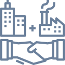

Soluções
Tecnologia da Informação - TIC
 Outsourcing específicos (selective) até o total (full) em infraestrutura e suporte.
Outsourcing específicos (selective) até o total (full) em infraestrutura e suporte.
• Suporte a usuários (Suporte a hardware e software)
• Administração de rede
• Operação
• Suporte a servidores (serviços)
• Gestão de Service Desk
• Gerenciamento de segurança de rede
Projetos
• IMAC’s (Instalação, movimentação, adição e troca)
• Verificação de segurança de rede
○ Configuração de Firewall
○ Verificação de segurança de invasão
○ Verificação/eliminação de malware (Virus,
adware, phishing, etc.)
○ Verificação de segurança de acesso (Controle de
senhas, acesso a dados/dispositivos)
○ Verificação de segurança de armazenamento
(Implementação de rotinas e solução de Backup)
○ Implementação das disciplinas ITIL
 Desenvolvimento de Aplicações na Nuvem ou Local
Desenvolvimento de Aplicações na Nuvem ou Local
• Análise e programação
• Suporte à sistemas legados
• Portais Web
Facilities
 Outsourcing seletivo (Terceirização) - Apoio Administrativo
• Pessoal especializado
• Redefinição de Rotinas
• Desenvolvimento de soluções integradas com sistemas
informatizados.
 Alocação de pessoal
Alocação de pessoal
• Recrutamento e seleção
• Departamento Pessoal
• Treinamentos
• Gestão completa na Web com visualização gerencial para
os clientes (NEEO) (Sistema de Gestão e Controle
Operacional).
Transformação Empresa Digital – Conceito 3x5
 Infraestrutura
Infraestrutura
• Virtualização de Servidores;
• Links de Internet com contingência;
• Hospedagem;
• Compartilhamento de Pastas e documentos na nuvem;
• Virtualização de aplicações legadas (em nuvem);
• Estrutura hierarquizada de backup;
• Infraestrutura escalável (crescimento ou redução);
• Digitalização de documentos (hardware e software).
 Processos
Processos
• Paperless;
• Adequação dos processos para cultura digital.
Home Office
 Home Office
Home Office
• Suporte aos usuários remotos;
• Acesso seguro (VPN);
• Gerenciamento de inventário;
• Acordo de confidencialidade;
• Acordo de Home office com controle de
horas/produção.
Sistema de Rotinas Administrativas
 NEEO
NEEO
• Banco de currículo
• Contratação na web
• Rotinas de DP
• Benefícios
• Exames
• Férias e Licenças – controle e coberturas.
• Ponto Web
• APP para utilização dos funcionários
• Contra cheque Web